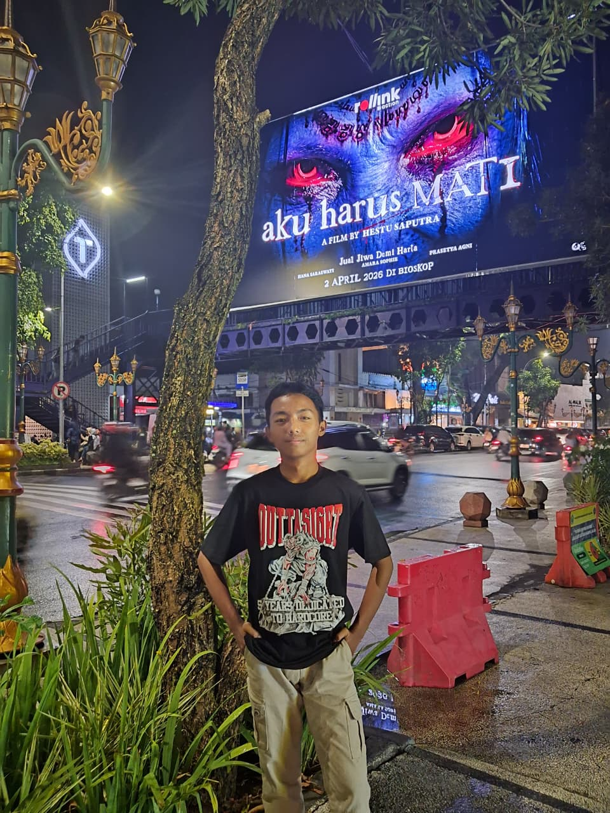

HTML & CSS
Menyusun struktur halaman dan mengatur tampilan website.
HALO, SELAMAT DATANG DI PORTOFOLIO SAYA
Saya siswa Rekayasa Perangkat Lunak di SMKN 1 Kepanjen. Saya sedang belajar membuat website menggunakan HTML, CSS, dan JavaScript serta terus mengembangkan kemampuan melalui proyek.
📍 SMKN 1 Kepanjen · Rekayasa Perangkat Lunak

STUDENT DEVELOPER
Belajar, mencoba, berkembang.
01 / TENTANG SAYA
Sedikit tentang diri saya dan hal yang sedang saya pelajari.
Web Development · RPL
Saya merupakan siswa jurusan Rekayasa Perangkat Lunak di SMKN 1 Kepanjen yang tertarik dengan pembuatan website.
Saya senang mempelajari desain website, membuat halaman responsif, dan mencoba JavaScript. Saya ingin terus berlatih melalui proyek sekolah maupun latihan pribadi.
02 / SKILL & TOOLS
Teknologi dan software yang saya gunakan untuk berlatih.
Menyusun struktur halaman dan mengatur tampilan website.
Mempelajari logika pemrograman dan interaksi website.
Alat yang digunakan untuk menulis kode dan membuat desain.
03 / SELECTED WORK
Beberapa proyek latihan untuk mengembangkan kemampuan web development.

Latihan untuk mempelajari struktur halaman dan dasar desain website.

Latihan membuat tampilan website yang menyesuaikan ukuran layar.

Latihan membuat website responsif dengan beberapa fitur interaktif.
Ganti screenshot dan alamat proyek sesuai file yang benar-benar kamu miliki.
04 / LEARNING JOURNEY
Fokus belajar dan pengembangan kemampuan saya.
Belajar struktur halaman, warna, layout, dan desain website.
Mempelajari logika pemrograman dan menambahkan interaksi.
Menerapkan materi yang dipelajari ke proyek sekolah dan latihan pribadi.
Terus berlatih membuat website yang rapi dan mudah digunakan.
05 / GET IN TOUCH
Terima kasih sudah mengunjungi portofolio saya. Kamu bisa menghubungi saya melalui email atau media sosial.
azrilrplkanesa@gmail.com ↗